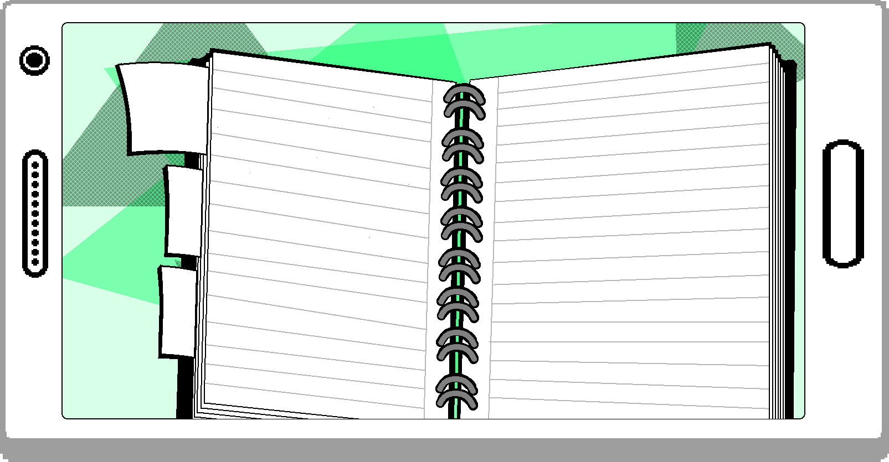
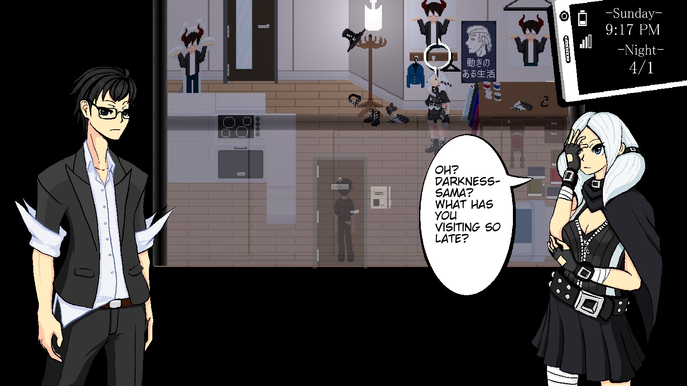
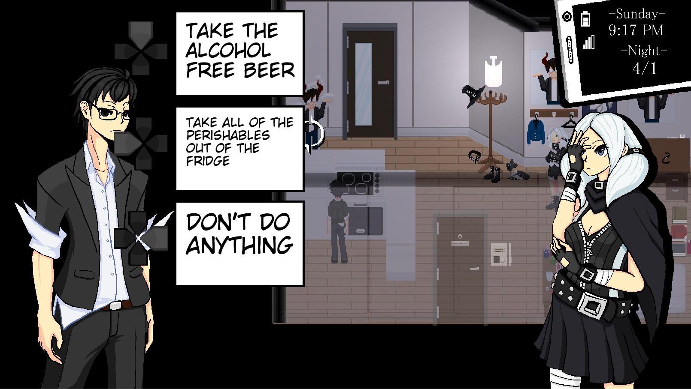
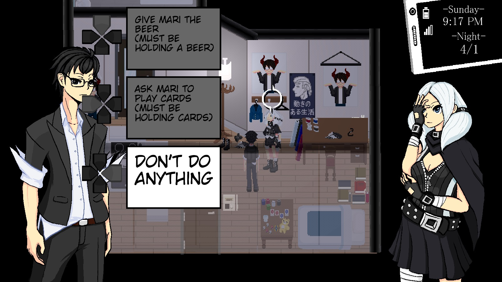

Rainfall’s Active Social System
Overview
Our goal for Rainfall is to be able to take static, turn-based visual novel events and incorporate dynamic opportunities in each scene. Through investigations, Active Choice, and Lockon Acknowledge we aim to give the player a toolbox to reach a scene's conclusion. Gathering rumors will reveal new chat options, ignoring characters may change their reactions, and deciding how and where you interact with characters will affect how they view you. It's not just what you say, but what you do that decides the outcome.
Investigations
Every social interaction in the game both story-required and optional will trigger an investigation. This menu screen can be thought of as being a running quest log that encapsulates the choices a player has made throughout the game. Each of these investigations will have their own rewards some will grant the player different abilities in combat while others will change other character’s perceptions of you and grant you different actions and dialogue you can use within the various scenes.

Active Choice
When designing the social portions of Rainfall, we’re inspired by two main categories of games: the Persona series and the indie Puzzle-Adventure RPGs like Mad Father, OneShot, Detention, Yume Nikki, and other games like these. The Persona influences are apparent in the world, UI, and game mechanics of the social side. However, one major factor in how we differentiate ourselves from Persona is introducing active elements to the traditionally static time chunks of the game. These active elements have their origins in the puzzle sections of these puzzle-adventure RPGs where in order to move the plot forward the player has to acquire and combine items and then interact with various objects and people with these items to complete a simple puzzle. While the games we are influenced by are not particularly complex in these puzzles, these puzzle sections serve to both break up the story sections and to better immerse the player in the role of their characters. Though one area where many of these games are lacking is in having multiple solutions to a single puzzle. Oftentimes a room or set of rooms will be presented with a handful of items all of which are needed to be utilized in a certain way to proceed. While this makes the puzzle harder to solve, it can also serve as a blocker for players if they can’t figure out the solution and it lacks in allowing for player-expression. In Rainfall we aim to marry these two game types together and attempt to eliminate some of the deficiencies we see in the genre via Active Choice.
Each scene in Rainfall can be broken down into three main parts: intro, active choice, and conclusion. When a scene is first triggered, the intro phase starts which will either start a new investigation or trigger the next step in a current investigation. This phase will be similar to a normal visual novel featuring characters talking in a turn-based fashion with some elements of choice in dialogue options depending on the results of your investigations. After a certain point in the dialogue, the active choice phase will begin this is a free-roaming section where the player can interact with characters and the environment to reach one of multiple endings for a scene. Depending on the order and types of interactions the player performs they will eventually trigger the conclusion phase where they will complete the current step of an investigation and record the way in which they did it. The results of this conclusion will be used in later scenes to trigger other active choices and affect dialogue and how characters perceive Jin.
Example
-Intro Phase-
Jin enters Mari's Apartment. Mari turns to face Jin and starts talking to him.
Mari: Oh? Darkness-sama? What has you visiting so late? Jin: I didn't really have anything to do Jin: And this place sounded like fun Mari: Darkness-sama...you shouldn't say that to a high schooler
Investigation “Another Boring Night with Mari” begins and presents four conclusions: -Leave Mari's Apartment -Be a nuisance to Mari -Get Mari to drink alcohol -Play a card game with Mari
These conclusions can also be viewed at any time during the investigation by toggling Author Vision. This will show all four conclusions on the screen along with the current things you’ve done in a scene so far.
 -Active Choice Phase-Jin now has several objects and characters he can lock onto. The Fridge, Mari, Mari’s Nightstand, and the Front Door. Any of these can be interacted with in any order.
1. Talk To Mari Mari: Feel free to do almost whatever you want Darkness-sama
Show Active Choices -If Jin is holding a beer, you can give Mari a beer -If this is chosen, this will trigger Conclusion 3 -If Jin is holding cards, you can ask Mari to play cards -If this is chosen, this will trigger Conclusion 4 -Don’t do anything
2. Interact With The Fridge Jin: Do you have any alcohol? Mari: YOU REALLY SHOULDN’T SAY THAT TO A HIGH SCHOOLER
Show Active Choices -Take the Alcohol Free Beer -If this is chosen, Jin will now be holding a beer -This will also trigger a Doujin Text pop-up of “I should give this to Mari” -Take all of the perishables out of the fridges -If this is chosen, Jin will now have the Has Ruined Mari’s Food context for the rest of the scene -This will also trigger the following dialogue Mari: Darkness-sama why are you doing this?! Jin: Just to annoy you -Don’t do anything
3. Interact With Mari’s Nightstand
Show Active Choices -Take the Cards -If this is chosen, Jin will now be holding cards -This will also trigger a Doujin Text pop-up of “I should see if Mari wants to play cards” -Mess up the nightstand -If this is chosen, Jin will now have the Has Ruined Mari’s Nightstand context for the rest of the scene -This will also trigger the following dialogue Mari: Darkness-sama stop messing up my room! -Don’t do anything
-Conclusions Phase-Conclusion 1: Leave End Interact With the Front Door Mari: Wait what you're leaving already? You just got here! Jin leaves Mari’s apartment. This concludes the investigation “Another Boring Night with Mari”. Mari will remember that you ditched hanging out with her next time.
Conclusion 2: Nuisance End Triggered automatically after gaining both the Has Ruined Mari’s Food and Has Ruined Mari’s Nightstand contexts. Mari: Darkness-sama you're being a huge pain! Mari: Please leave! Jin leaves Mari’s apartment. This concludes the investigation “Another Boring Night with Mari”. Mari will remember that you were a nuisance and messed up her apartment.
Conclusion 3: Beer End Triggered automatically after giving Mari the alcohol-free beer from her fridge. Jin: Here you go Mari, drink this it's delicious! Mari: STOP SAYING THESE THINGS TO A HIGH SCHOOLER Jin and Mari open and cheers their beers and the scene fades to black. This concludes the investigation “Another Boring Night with Mari”. Mari will remember that Jin and her had a fun night pretending to get drunk together.
Conclusion 4: Cards End Triggered automatically after giving Mari the cards from her nightstand. Jin: Anyways want to play cards or something? Mari: Sure, though I don't think you've ever beaten me before! Jin and Mari sit down on the floor and begin gambling. This concludes the investigation “Another Boring Night with Mari”. Mari will remember that Jin and her had a fun night gambling even though she beat Jin every round.
Conclusions
In Rainfall we believe that the active choice component of a scene along with many conclusions to a singular investigation will allow for our game to transform traditionally static visual novel elements into more of a puzzley theatre performance where the player is deciding what path the game will take. While the individual concepts aren’t unique nor revolutionary, by designing every scene with this degree of flexibility to complete we hope that players will approach a scene in a similar fashion to an encounter in a Dungeons and Dragons-esque pen and paper game. The player should feel compelled to explore the scene space and have a desire to shape Jin’s character through their own actions in meaningful ways. While selecting the option to give alcohol-free beer to Mari is a comical scene, actually grabbing a beer and delivering it to Mari will more effectively place the player in the role of Jin and be more memorable because of it.